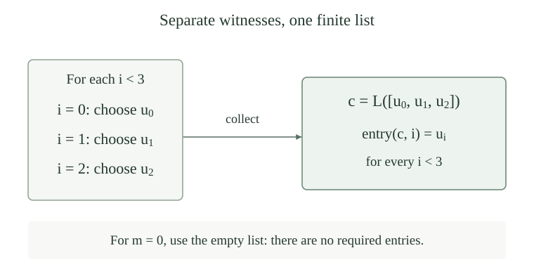

Fix an oracle \(A\subseteq\mathbb N\). A finite-arity relation \(R\subseteq\mathbb N^k\) is decidable relative to \(A\), or \(A\)-decidable, if one oracle program always returns its characteristic bit \(\chi_R(\bar x)\). Inputs are packed using the established finite-arity conventions. We use the same definition when \(k=0\): there is one empty input tuple.
A computable matrix relative to \(A\) is such a relation, with its free and quantified input positions specified. All its tests terminate, including on tuples that will not be witnesses. Without a superscript, “computable” and “decidable” mean ordinary computability. Equivalently one may use the empty oracle, whose answers can be computed without an oracle.
This is an algorithmic condition on a relation, rather than a restriction on a displayed arithmetic formula. In particular, the computable base used here is distinguished from the bounded-formula base in arithmetic syntax. Their positive-level comparison will require an argument.
Let \(P\subseteq\mathbb N^k\) and \(n\in\mathbb N\). Write \(P\in\Sigma_n^A\) if some \(A\)-decidable relation \(R\subseteq\mathbb N^{k+n}\) satisfies
This is a \(\Sigma_n^A\) description: position \(i\) is existential when \(i\) is even and universal when \(i\) is odd. A \(\Pi_n^A\) description starts universally and reverses every polarity. Thus its position \(i\) is universal for even \(i\). The matrix always has \(k\) free inputs and exactly \(n\) further inputs. For \(n=0\) the prefix is empty, and both classes consist of the \(A\)-decidable relations.
The class \(\Delta_n^A\) is the intersection \(\Sigma_n^A\cap\Pi_n^A\). Its two descriptions can have different matrices. We write \(\Sigma_n,\Pi_n,\Delta_n\) for ordinary computable matrices. Superscript \(0\), as in \(\Sigma_n^0\), is another common notation for this unrelativized numerical hierarchy.
For orientation, \(\Sigma_1^A\) means \(\exists u\,R\), \(\Pi_2^A\) means \(\forall u\exists v\,R\), and \(\Sigma_3^A\) means \(\exists u\forall v\exists w\,R\). Each existential witness may depend on the preceding universal choices. These are definitions by quantifiers and computable matrices, with no use of stronger oracles to define the levels.
For every \(n,A\) and finite-arity relation \(P\),
Here \(\neg P\) is the relation on the same input tuples that holds exactly when \(P\) fails. The corresponding equivalence with \(\Sigma\) and \(\Pi\) exchanged also holds, and \(\Delta_n^A\) is closed under complement.
Move a negation through the finite prefix. Each existential quantifier becomes universal and each universal becomes existential. Negate the matrix by reversing its characteristic bit, which is still a total \(A\)-computation. The transformation is reversible. At level zero this is simply closure of decision procedures under complement. Applying both directions gives the assertion for \(\Delta_n^A\).
Allowing \(n\) alternating finite blocks of arbitrary fixed lengths, including empty blocks, defines the same classes as above. Every such description has one with exactly \(n\) single-number positions; a single-number description already has block lengths one. Ordinary computable tuple recoding preserves every level.
Use the list code \(L\) and its total entry decoder \((c)_i\), which returns zero beyond the decoded list. For fixed \(r\), let \(d_r(c)=((c)_0,\ldots,(c)_{r-1})\). This is a total ordinary primitive-recursive map onto \(\mathbb N^r\): a tuple is obtained by coding its list of entries. There is no need to reject shorter lists; their default entries still describe an \(r\)-tuple. Therefore, for any relation \(S\),
Replace each block separately, leaving earlier variables as parameters. The new matrix first decodes the finitely many blocks and then runs the original terminating test, so it remains \(A\)-decidable. At \(r=0\) there is one empty tuple; both numerical quantifiers are vacuous because their decoded tuple is always empty. Splitting a single variable into a one-element block gives the converse convention. Pair coding is the two-variable instance.
For free inputs, use the unary relation \(P^\#(c)\leftrightarrow P(d_k(c))\). Substituting \(d_k\) in a matrix gives its unary description, and substituting \(L(\bar x)\) recovers the original relation because \(d_k(L(\bar x))=\bar x\). Thus classification agrees in every level. This convention supplies a meaning for every code, including codes of lists of a different length.
Let \(f:\mathbb N^j\to\mathbb N^k\) be total computable relative to \(A\), with each coordinate computed by a terminating oracle program. If \(P\) belongs to \(\Sigma_n^A\), \(\Pi_n^A\), or \(\Delta_n^A\), then \(\bar x\mapsto P(f(\bar x))\) belongs to that same class. In particular, ordinary computable preimages preserve every relative level.
Given a description with matrix \(R(\bar z,\bar y)\), use the matrix \(R(f(\bar x),\bar y)\) and exactly the same prefix. Compute \(f(\bar x)\) first, then run the original matrix test. Oracle composition gives one terminating test for the substituted matrix. This works at \(n=0\) as well. Apply it to both witnessing descriptions for \(\Delta_n^A\).
Permuting, repeating, or ignoring free inputs are special cases. For unary sets, if \(X\le_mY\) by an ordinary total computable many-one map, membership of \(Y\) in a displayed class implies membership of \(X\) in it.
For every \(n\ge0\) and oracle \(A\),
Consequently each individual sequence of classes is increasing, and every \(A\)-decidable relation belongs to both polarities at every level.
Appending one unused variable at the end of an alternating prefix preserves its starting polarity and changes its length from \(n\) to \(n+1\). The new matrix ignores that variable. Existential and universal quantification of a constant truth value are equivalent to that value because \(\mathbb N\) is nonempty. This proves the same-polarity inclusions, including the empty-prefix case.
Prepending an unused existential quantifier to a \(\Pi_n^A\) description puts it in \(\Sigma_{n+1}^A\). Prepending an unused universal quantifier to a \(\Sigma_n^A\) description puts it in \(\Pi_{n+1}^A\). Combine these with the same-polarity inclusions. Nothing in this padding argument asserts that any of the inclusions is proper.
For every \(n,A\), both \(\Sigma_n^A\) and \(\Pi_n^A\) are closed under finite unions and finite intersections of relations of the same arity. Hence \(\Delta_n^A\) is closed under all finite Boolean operations.
Prove the two polarity assertions together by induction on \(n\). At zero, combine the finitely many total characteristic tests. For the induction step, first consider two descriptions, with distinct first variables \(u,v\). For either connective \(\circ\in\{\land,\lor\}\),
For conjunction, pair the two witnesses. For disjunction, use its witness and fill the unused coordinate by zero. Both reverse implications follow by decoding. The analogous universal equivalence is
For conjunction this follows directly from the surjectivity of pairing. For disjunction, the forward direction is immediate. If neither universal assertion holds, choose a counterexample to each and pair them; that pair refutes the right-hand side. This proves the converse by classical logic.
After their first quantifiers, two \(\Sigma_{n+1}^A\) descriptions have \(\Pi_n^A\) tails. Computable substitution and the induction hypothesis combine these tails under either connective; the existential equivalence then gives a \(\Sigma_{n+1}^A\) description. Use the universal equivalence for \(\Pi_{n+1}^A\). Iteration proves closure for every fixed finite collection. The empty union and empty intersection are the always-false and always-true decidable relations. Complement duality completes the Boolean assertion for \(\Delta_n^A\).
For every relation \(S(\bar x,i,u)\) and every natural-number bound \(m\), without a computability assumption on \(S\),
The bound may depend on the fixed free inputs \(\bar x\). This equivalence collects finitely many possibly different witnesses into one list code; it does not replace them by one common numerical witness.
For the forward direction, induct on \(m\). At zero use the empty list. Given a list \([u_0,\ldots,u_{m-1}]\) of witnesses for the first \(m\) indices, choose a witness \(u_m\) for index \(m\) and append it. The invariant is that the constructed list has length \(m\) and satisfies \(S(\bar x,i,u_i)\) for every \(i<m\). Its code has exactly those entries, so it witnesses the right-hand side. This is finite witness choice justified by induction, without an infinite choice assertion.
Conversely, a supplied \(c\) gives the individual witness \((c)_i\) at every required index. If its decoded list is short, some of these entries are zero; a true right-hand side already verifies that those zeros work. Thus no length test is needed for this equivalence. Coding a supplied list is computable, but finding witnesses for an arbitrary \(S\) need not be.

Let \(P(\bar x,i)\) be in \(\Sigma_n^A\), \(\Pi_n^A\), or \(\Delta_n^A\), and let \(b(\bar x)\) be a total \(A\)-computable natural-valued function. Both relations
belong to that same class, including when \(n=0\) or the bound is zero.
Prove bounded universal closure for both polarities by induction on \(n\). At zero, compute \(b(\bar x)\), run the total decision procedure at each smaller index, and take their finite conjunction. This loop terminates for every input.
Suppose first that \(P(\bar x,i)\leftrightarrow\exists u\,T(\bar x,i,u)\), where the joint relation \(T\) is \(\Pi_n^A\). By , the bounded universal assertion is equivalent to
The substituted relation is \(\Pi_n^A\) by computable preimages. Regard \(\bar x,c\) as its free inputs, and let its bound ignore \(c\). The induction hypothesis makes the bounded universal tail \(\Pi_n^A\), so the outer existential gives \(\Sigma_{n+1}^A\). All original parameters and the collected code are retained in this induction; no witness is chosen independently of earlier free values.
For \(P(\bar x,i)\leftrightarrow\forall u\,T(\bar x,i,u)\) with \(T\in\Sigma_n^A\), commute the two universal quantifiers:
The induction hypothesis applies with \(\bar x,u\) free and with the bound ignoring \(u\). Its tail is \(\Sigma_n^A\), giving \(\Pi_{n+1}^A\). These two steps prove bounded universal closure at every level. Bounded existential closure follows by writing it as the negation of a bounded universal negation and using complement duality. Apply both polarity conclusions for \(\Delta_n^A\).
This also handles nested bounded quantifiers whose bounds depend on previously chosen variables. At each application those earlier variables are free parameters; the bound must be computed from them before quantifying the new bounded variable. The collection step preserves this order of dependence. At bound zero every universal loop is true and every existential loop false, just as the empty finite Boolean operations require.
Take \(S(i,u)\) to mean \(u=i+1\). Which list proves \(\forall i<m\;\exists u\,S(i,u)\), and what happens at \(m=0\)? Would the same empty list prove \(\exists i<0\;\exists u\,S(i,u)\)?
The list \([1,2,\ldots,m]\) supplies the witness \(i+1\) at each \(i<m\). When \(m=0\), use the empty list with code zero. The collected condition asks for no entries, so it is true. It does not claim that there is an index below zero. The bounded existential assertion is false because its index range is empty, regardless of which list code is supplied.
For \(n\ge1\), if \(P(\bar x,u)\in\Sigma_n^A\), then \(\exists u\,P(\bar x,u)\in\Sigma_n^A\). Dually, an unbounded universal quantifier preserves \(\Pi_n^A\) for \(n\ge1\). Any fixed finite block of matching quantifiers has the same property.
A \(\Sigma_n^A\) description already starts with \(\exists y_0\). Place \(\exists u\) beside it and encode the two witnesses by one pair, using . This preserves the remaining \(n-1\) alternating positions. The universal argument is the same, or follows by complement duality. Iterate for a finite block. The positive-level hypothesis matters: an unbounded search over decidable tests may be enumerable without being decidable, as the halting problem shows.
For every oracle \(A\) and every finite-arity relation \(P\),
Consequently \(P\in\Pi_1^A\) exactly when its complement is computably enumerable relative to \(A\).
Suppose \(P(\bar x)\leftrightarrow\exists t\,R(\bar x,t)\) with \(R\) \(A\)-decidable. On input \(\bar x\), test \(t=0,1,2,\ldots\) in order and halt at the first true test. Every earlier test terminates, so this search halts exactly when a witness exists. It is an actual oracle program: in the unary case let \(r\) compute \(\chi_R(x,t)\) on paired inputs, and let \(z\) be the ordinary zero-test program, returning one at zero and zero at positive inputs. Then use
The initial pair starts the strict search at zero. Its test returns zero exactly when \(R(x,t)\) holds, and otherwise returns the defined positive value one. The program returns the least successful \(t\); without a witness it is undefined. Packing the free tuple gives the finite-arity version.
Conversely, choose an index \(e\) recognizing the tuple-coded relation. The actual relative resource certificates give
The bounded value test is primitive recursive relative to \(A\), hence \(A\)-decidable. It has finitely many free coordinates and one witness coordinate, so this is a genuine \(\Sigma_1^A\) description. Its check may need \(A\); it is not claimed to be an ordinary computable matrix for an arbitrary oracle. Complement duality gives the universal assertion.
For every oracle \(A\) and finite-arity relation \(P\),
A \(\Delta_1^A\) relation and its complement are both \(A\)-c.e. by . The existing two-sided recognition theorem races their recognizers and returns the correct characteristic bit on every input. Conversely an \(A\)-decider, regarded as a matrix with an ignored witness coordinate, gives both an existential and a universal first-level description. Tuple packing transfers the argument to every finite arity, including the empty tuple.
If \(A\le_T B\), then, at every level and every finite arity,
By the definition of Turing reducibility, a total \(B\)-oracle program computes \(\chi_A\). Substitute that program for every query leaf in an \(A\)-decider for the matrix, using the proved oracle substitution construction. It still halts on every tuple and returns exactly the old characteristic bit. Leave the entire quantifier prefix unchanged. The same argument applies to both descriptions of a \(\Delta_n^A\) relation.
For the fixed ordinary numbering \(\varphi_e\) and its domains \(W_e\), the relations
belong to \(\Pi_2\) and \(\Sigma_2\), respectively. These are membership assertions, without a claim that the indicated levels are minimal.
Using the ordinary bounded evaluation certificates,
The matrix is primitive recursive in all three arguments. Its prefix starts universally and has two positions, establishing the \(\Pi_2\) description. The witness allowance may depend on the input \(x\).
For finiteness use the actual finite stages \(W_{e,s}=\{x<s:\exists k<s\;T(e,x,k)\}\). Their joint membership test is primitive recursive, they increase with \(s\), and their union is \(W_e\). A subset of \(\mathbb N\) is finite exactly when all its elements lie below some natural-number bound \(a\). Therefore
Indeed a bound on \(W_e\) bounds each stage. Conversely every \(x\in W_e\) eventually appears in a stage and hence lies below \(a\). The bounded universal condition in \(x\) is a primitive-recursive matrix jointly in \(e,a,s\), so only the two unbounded positions are counted. The empty domain is covered by \(a=0\).
Matching reductions prove \(\Pi_2\)-completeness of totality and \(\Sigma_2\)-completeness of finiteness. Those arguments establish lower bounds in addition to the descriptions here.
The formula \(\forall u\;\exists v\;[v=u\land x\text{ is even}]\) is a \(\Pi_2\) description. Does it follow that the set it defines fails to belong to a lower level?
No. The formula is equivalent to “\(x\) is even.” If \(x\) is even, choose \(v=u\) for every \(u\). Conversely apply the formula at \(u=0\); its matrix includes evenness. The set is decidable by computing the remainder modulo two, so it is already \(\Delta_0\). A displayed prefix proves an upper bound on classification. A proof excluding a simpler definition is additional mathematics.
Are \(\forall u\exists v\,[v>u]\) and \(\exists v\forall u\,[v>u]\) equivalent over \(\mathbb N\)? What is the relevant difference in their witnesses?
The first is true: for each supplied \(u\), choose \(v=u+1\). The second is false: for any proposed \(v\), taking \(u=v\) refutes \(v>u\). An existential choice may depend on preceding universal variables, but it cannot anticipate a later universal choice. The finite-witness collection lemma packages separate witnesses over a finite range; it neither exchanges these unbounded quantifiers nor produces one witness working for all \(u\).
An arithmetic prefix definition of level \(n\) means precisely the bounded-matrix prefix convention in the standard structure \((\mathbb N,0,S,+,\cdot)\): a bounded arithmetic formula, preceded by \(n\) alternating finite blocks with the specified starting polarity. Blocks may be empty. A bounded formula uses only bounded quantifiers, with each bounding term independent of the variable it binds.
This describes actual formulas in that arithmetic language, with separate free variables for the input coordinates. Primitive-recursive coding functions and program evaluations are not added as arithmetic function symbols. The bounded truth theorem makes the interpretation of every such matrix computable. Our algorithmic level zero allows every computable relation; the arithmetic level zero requires a bounded formula. We use only the proved implication from bounded syntax to computable truth at level zero, and the comparison below assumes \(n\ge1\).
For every \(n\ge1\) and every relation \(P\subseteq\mathbb N^k\), the following equivalences hold with the same starting polarity and number of blocks:
The equivalence applies to every fixed finite arity, including zero. Consequently the corresponding positive \(\Delta_n\) classes also agree.
First, a computable relation \(R\) on any fixed finite number of coordinates has both an existential bounded and a universal bounded arithmetic definition. Both \(R\) and its complement are enumerable, so the existing finite-arity arithmetization theorem gives existential bounded definitions for each. Negate the definition of the complement to obtain the universal definition of \(R\), using bounded negation. Thus we have a choice of forms \(\exists\bar w\,D\) and \(\forall\bar w\,E\), where \(D,E\) are bounded formulas with exactly the required free input positions.
Take a computable-matrix description of \(P\) with \(n\) alternating positions. Its last quantifier exists because \(n\ge1\). If that quantifier is existential, replace the matrix by its existential bounded definition; if universal, use the universal bounded definition. In each case the added finite witness block has the same polarity as the last old quantifier. Join them into one block. All earlier quantifiers keep their order, and the resulting formula has precisely \(n\) alternating arithmetic blocks over a bounded matrix.
The replacement is valid for every value of all free and quantified matrix inputs. Choose distinct names for the new witness variables so they bind no old variable, and retain the old input variables as free variables of \(D\) or \(E\). The existing arithmetic prefix operations then bind only their indicated block coordinates. For a \(\Sigma_n\) prefix the last block is existential when \(n\) is odd and universal when \(n\) is even; for a \(\Pi_n\) prefix the parity is reversed. Using the matching form is exactly what avoids an extra alternation.
Conversely, suppose an actual arithmetic formula has the required \(n\)-block prefix with bounded matrix \(D\). Replace each finite block by one numerical code, using the surjective fixed-length decoders in . A block of length zero gives an ignored code variable. After the \(n\) numerical choices, decode the blocks and run the terminating bounded truth test for \(D\). This is an ordinary computable matrix on the original \(k\) inputs and \(n\) code inputs. Surjectivity gives the semantic equivalence at each existential or universal block, in its original order. This proves the appropriate computable-matrix description.
Both constructions leave all free input coordinates available, so they apply equally to relations, unary sets and sentences. Applying the two polarity equivalences proves the \(\Delta_n\) assertion. The forward construction required an existing last quantifier, so it does not identify the two definitions of level zero.
This is an ordinary arithmetic-language comparison. With an arbitrary oracle \(A\), the computable matrices may ask membership questions about \(A\); no ordinary arithmetic formula for that oracle is assumed. Therefore the theorem does not turn arbitrary \(\Sigma_n^A\) relations into ordinary arithmetic prefix definitions.